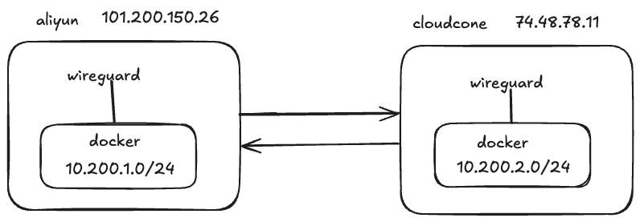
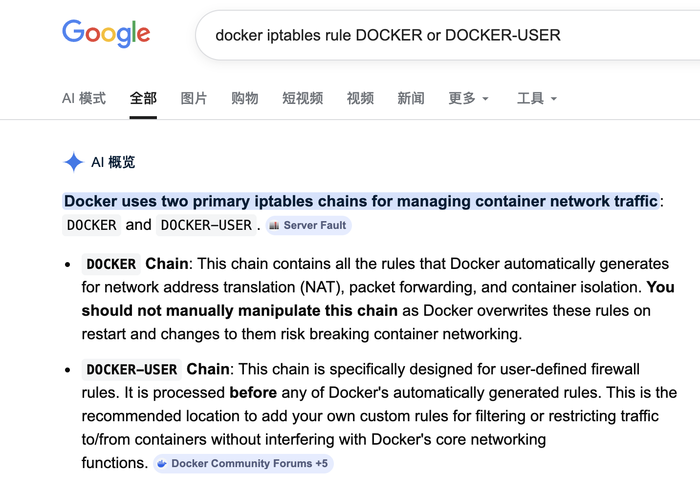
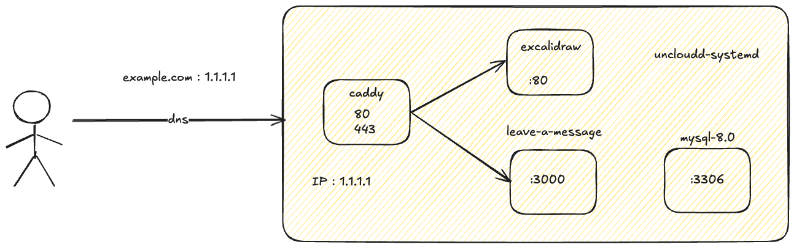

uncloud 初体验
安装
注意项：
- mac 上使用 1password 的 ssh-agent，需覆盖 SSH_AUTH_SOCK 变量
- 使用私钥登录要写全路径，不然执行 uc 会提示找不到私钥
- 多集群可通过指定上下文区分 -c, --context string
- 因为域名和 dns 原因，并未直接安装 caddy 和 dns
$ export SSH_AUTH_SOCK=~/Library/Group\ Containers/com.1password/t/agent.sock
$ uc machine init root@example.com --name example-1 --no-caddy --no-dns
caddy ingress
- 使用 ip ssl
- caddy 仅为安装并配置 zerossl 签名证书
- 路由划分放到 excalidraw，由于 ip ssl 的原因，个人测试不影响
$ cat certificate.crt ca_bundle.crt > fullchain.crt
services:
caddy:
image: docker.1ms.run/library/caddy:2.11
command: caddy run -c /config/Caddyfile
environment:
CADDY_ADMIN: unix//run/caddy/admin.sock
volumes:
- /root/caddy:/root/caddy # 此处是在服务器上存放 ssl 证书文件的路径，可以根据需要修改
- /var/lib/uncloud/caddy:/data
- /var/lib/uncloud/caddy:/config
- /run/uncloud/caddy:/run/caddy
x-ports:
- 80:80@host
- 443:443@host
deploy:
mode: global
excalidraw
- / 路径是 excalidraw
- /message 是 leave-a-message 服务
services:
excalidraw:
image: docker.1ms.run/excalidraw/excalidraw
x-caddy: |
:443 {
tls /root/caddy/fullchain.crt /root/caddy/private.key
# excalidraw
reverse_proxy {{upstreams}} {
import common_proxy
}
# leave-a-message static
handle /static/* {
reverse_proxy {{upstreams "message" 3000}} {
import common_proxy
}
}
# leave-a-message api
handle /api/* {
reverse_proxy {{upstreams "message" 3000}} {
import common_proxy
}
}
# leave-a-message root pages
handle_path /message/* {
reverse_proxy {{upstreams "message" 3000}} {
import common_proxy
}
}
log
}
leave-a-message
leave-a-message compose-uncloud.yml
services:
message:
build:
context: .
platforms:
- linux/amd64
image: message:{{date "20060102-150405" "Local"}}
configs:
- source: app_config
target: /app/.env
mode: 0644
db:
image: docker.1ms.run/library/mysql:8.0
restart: always
environment:
MYSQL_ROOT_PASSWORD: 12345678
MYSQL_DATABASE: message
x-ports:
- 3306:3306/tcp@host
volumes:
- mysql_data:/var/lib/mysql
volumes:
mysql_data:
configs:
app_config:
content: |
SERVER_HOST=0.0.0.0
SERVER_PORT=3000
ENABLE_LOGGER=true
MYSQL_USER=root
MYSQL_PASSWORD=12345678
MYSQL_HOST=db
MYSQL_DB=message
wireguard 组网测试
没用 uncloud 之前也没用过 wireguard 看了下 uncloud 的 blog connect-docker-containers-across-hosts-wireguard 不是很复杂，想要测试下 wireguard 组网效果
官方的图更直接

整体流程是(括号1代表第一台机器，括号2代表第二台)
docker bridge(1) -> iptables(1) -> wireguard(1) -> wireguard(2) -> iptables(2) -> docker bridge(2)
创建新的 bridge 网络，通过 iptables 将 bridge 网段流量转发到 wireguard，两台机器的 wireguard 之间做了 tunnel，另外一台机器的 wireguard 接收到流量通过 iptables 规则转发到 bridge 网络下的容器。
我的环境

先提前互 ping 下，免的访问不了白测试
# Machine 1
$ ping 74.48.78.11
PING 74.48.78.11 (74.48.78.11) 56(84) bytes of data.
64 bytes from 74.48.78.11: icmp_seq=1 ttl=48 time=189 ms
64 bytes from 74.48.78.11: icmp_seq=2 ttl=48 time=181 ms
# Machine 2
$ ping 101.200.150.26
PING 101.200.150.26 (101.200.150.26) 56(84) bytes of data.
64 bytes from 101.200.150.26: icmp_seq=1 ttl=50 time=193 ms
64 bytes from 101.200.150.26: icmp_seq=2 ttl=50 time=193 ms
# Machine 1
$ docker network create --subnet 10.200.1.0/24 -o com.docker.network.bridge.trusted_host_interfaces="wg0" multi-host
18ca4396c2977a987d3238f4a6b83d4dd3a0ceabad25c7c1f670a967c6b1cdef
# Machine 2
$ docker network create --subnet 10.200.2.0/24 -o com.docker.network.bridge.trusted_host_interfaces="wg0" multi-host
04c3ec0b2eaba837c5e974bdc6c76ed4dda8c10349fd3cb75af3506b0e2bac63
# 两边分别执行，确保云厂商方面安全组开通 51820
$ iptables -I INPUT -p udp --dport 51820 -j ACCEPT
# 安装 wireguard 生成配置
$ apt update && apt install wireguard
$ umask 077
$ wg genkey > privatekey
$ wg pubkey < privatekey > publickey
PrivateKey 填本机的，PublicKey 则要填对端的
原文：
PrivateKey = <replace with 'privatekey' file content from Machine 1>
PublicKey = <replace with 'publickey' file content from Machine 2>
# 生成 wg 配置
# Machine 1
$ cat /etc/wireguard/wg0.conf
[Interface]
ListenPort = 51820
PrivateKey = kKaGXES+s2mFVYTxEMN/KTJ0k/a0S9bv8JxeVz0bdnA=
[Peer]
PublicKey = Y8ENSMHYspa1x6Hfnj1YgZL0xSrOzBHeV7i6f6UZbhQ=
# IP ranges for which a peer will route traffic: Docker subnet on Machine 2
AllowedIPs = 10.200.2.0/24
# Public IP of Machine 2
Endpoint = 74.48.78.11:51820
# Periodically send keepalive packets to keep NAT/firewall mapping alive
PersistentKeepalive = 25
# Machine 2
$ cat /etc/wireguard/wg0.conf
[Interface]
ListenPort = 51820
PrivateKey = MBLrCQ2eVCga+unX3IIKPSnyzsyh1SwkmRIkIryX+0k=
[Peer]
PublicKey = TJOqJi0AuPP3GOOYFmq8jAsmak/hgKRfEpAH2nJNiVk=
# IP ranges for which a peer will route traffic: Docker subnet on Machine 2
AllowedIPs = 10.200.1.0/24
# Public IP of Machine 2
Endpoint = 101.200.150.26:51820
# Periodically send keepalive packets to keep NAT/firewall mapping alive
PersistentKeepalive = 25
# 分别启动
$ wg-quick up wg0
查看 wg 状态
# Machine 1
$ wg show
interface: wg0
public key: TJOqJi0AuPP3GOOYFmq8jAsmak/hgKRfEpAH2nJNiVk=
private key: (hidden)
listening port: 51820
peer: Y8ENSMHYspa1x6Hfnj1YgZL0xSrOzBHeV7i6f6UZbhQ=
endpoint: 74.48.78.11:51820
allowed ips: 10.200.2.0/24
latest handshake: 45 seconds ago
transfer: 116.21 KiB received, 41.36 KiB sent
persistent keepalive: every 25 seconds
# Machine 2
$ wg show
interface: wg0
public key: Y8ENSMHYspa1x6Hfnj1YgZL0xSrOzBHeV7i6f6UZbhQ=
private key: (hidden)
listening port: 51820
peer: TJOqJi0AuPP3GOOYFmq8jAsmak/hgKRfEpAH2nJNiVk=
endpoint: 101.200.150.26:51820
allowed ips: 10.200.1.0/24
latest handshake: 1 minute, 4 seconds ago
transfer: 39.93 KiB received, 116.46 KiB sent
persistent keepalive: every 25 seconds
配置 iptables 规则，允许 wg 到 bridge 网络
# Machine 1
$ docker network ls -f name=multi-host
NETWORK ID NAME DRIVER SCOPE
18ca4396c297 multi-host bridge local
$ iptables -I DOCKER-USER -i wg0 -o br-18ca4396c297 -j ACCEPT
# Machine 2
$ docker network ls
NETWORK ID NAME DRIVER SCOPE
e4613839f6f6 bridge bridge local
f1954f4aff63 host host local
04c3ec0b2eab multi-host bridge local
7fb9f0ad47ba none null local
$ iptables -I DOCKER-USER -i wg0 -o br-04c3ec0b2eab -j ACCEPT
最后配置下本机容器出网通过 wg 网卡的策略
# Machine 1
$ iptables -t nat -I POSTROUTING -s 10.200.1.0/24 -o wg0 -j RETURN
# Machine 2
$ iptables -t nat -I POSTROUTING -s 10.200.2.0/24 -o wg0 -j RETURN
测试下互通性
# Machine 2
$ docker run -d --name whoami --network multi-host traefik/whoami
$ docker inspect b992403e1e4f|grep 10.200
"Gateway": "10.200.2.1",
"IPAddress": "10.200.2.2",
# Machine 1
$ docker run -it --rm --network multi-host busybox ping 10.200.2.2
PING 10.200.2.2 (10.200.2.2): 56 data bytes
64 bytes from 10.200.2.2: seq=0 ttl=62 time=194.198 ms
64 bytes from 10.200.2.2: seq=1 ttl=62 time=190.275 ms
64 bytes from 10.200.2.2: seq=2 ttl=62 time=198.435 ms
64 bytes from 10.200.2.2: seq=3 ttl=62 time=196.896 ms
64 bytes from 10.200.2.2: seq=4 ttl=62 time=197.444 ms
^C
--- 10.200.2.2 ping statistics ---
6 packets transmitted, 5 packets received, 16% packet loss
round-trip min/avg/max = 190.275/195.449/198.435 ms
$ docker run -it --rm --network multi-host alpine/curl http://10.200.2.2
Hostname: b992403e1e4f
IP: 127.0.0.1
IP: ::1
IP: 10.200.2.2
RemoteAddr: 10.200.1.2:60960
GET / HTTP/1.1
Host: 10.200.2.2
User-Agent: curl/8.17.0
Accept: */*
能看到互相通信没问题，就是延迟对比直 ping 会高一点点，毕竟本身两台机器就不近
在 1 机器把 iptables 规则导出看看
# filter
$ iptables -S -v
-P INPUT ACCEPT -c 608049 168734434
-P FORWARD DROP -c 0 0
-P OUTPUT ACCEPT -c 0 0
-N DOCKER
-N DOCKER-BRIDGE
-N DOCKER-CT
-N DOCKER-FORWARD
-N DOCKER-INTERNAL
-N DOCKER-USER
-A INPUT -p udp -m udp --dport 51820 -c 2385 192148 -j ACCEPT
-A FORWARD -c 270 22213 -j DOCKER-USER
-A FORWARD -c 147 12070 -j DOCKER-FORWARD
-A DOCKER ! -i docker0 -o docker0 -c 0 0 -j DROP
-A DOCKER ! -i br-18ca4396c297 -o br-18ca4396c297 -c 0 0 -j DROP
-A DOCKER-BRIDGE -o docker0 -c 0 0 -j DOCKER
-A DOCKER-BRIDGE -o br-18ca4396c297 -c 0 0 -j DOCKER
-A DOCKER-CT -o docker0 -m conntrack --ctstate RELATED,ESTABLISHED -c 0 0 -j ACCEPT
-A DOCKER-CT -o br-18ca4396c297 -m conntrack --ctstate RELATED,ESTABLISHED -c 0 0 -j ACCEPT
-A DOCKER-FORWARD -c 147 12070 -j DOCKER-CT
-A DOCKER-FORWARD -c 147 12070 -j DOCKER-INTERNAL
-A DOCKER-FORWARD -c 147 12070 -j DOCKER-BRIDGE
-A DOCKER-FORWARD -i docker0 -c 40 3360 -j ACCEPT
-A DOCKER-FORWARD -i br-18ca4396c297 -c 107 8710 -j ACCEPT
-A DOCKER-USER -i wg0 -o br-18ca4396c297 -c 123 10143 -j ACCEPT
# nat
$ iptables -t nat -S -v
-P PREROUTING ACCEPT -c 668150 42644933
-P INPUT ACCEPT -c 0 0
-P OUTPUT ACCEPT -c 7495 569953
-P POSTROUTING ACCEPT -c 7501 570385
-N DOCKER
-A PREROUTING -m addrtype --dst-type LOCAL -c 667962 42630817 -j DOCKER
-A OUTPUT ! -d 127.0.0.0/8 -m addrtype --dst-type LOCAL -c 0 0 -j DOCKER
-A POSTROUTING -s 10.200.1.0/24 -o wg0 -c 6 432 -j RETURN
-A POSTROUTING -s 10.200.1.0/24 ! -o br-18ca4396c297 -c 0 0 -j MASQUERADE
-A POSTROUTING -s 172.17.0.0/16 ! -o docker0 -c 2 168 -j MASQUERADE
关键是这三条
-A INPUT -p udp -m udp --dport 51820 -c 2385 192148 -j ACCEPT # 允许 wg 入网
-A DOCKER-USER -i wg0 -o br-18ca4396c297 -c 123 10143 -j ACCEPT # 允许 input 是 wg0 设备到 br-18ca4396c297 设备
-A POSTROUTING -s 10.200.1.0/24 -o wg0 -c 6 432 -j RETURN # 从容器出网走 wg 然后转发出去
原文还说 DOCKER-USER 规则会优先 DOCKER 链处理，所以添加在 DOCKER-USER，以后在自定义容器规则可以参考，查询确实如此

测试将 DOCKER-USER 的规则配置到 DOCKER rule 下也能正常工作，不过 docker 重启 DOCKER 里手动加的规则就会消失
$ iptables -I DOCKER -i wg0 -o br-18ca4396c297 -j ACCEPT
$ iptables -S
-P INPUT ACCEPT
-P FORWARD DROP
-P OUTPUT ACCEPT
-N DOCKER
-N DOCKER-BRIDGE
-N DOCKER-CT
-N DOCKER-FORWARD
-N DOCKER-INTERNAL
-N DOCKER-USER
-A INPUT -p udp -m udp --dport 51820 -j ACCEPT
-A FORWARD -j DOCKER-USER
-A FORWARD -j DOCKER-FORWARD
-A DOCKER -i wg0 -o br-18ca4396c297 -j ACCEPT
-A DOCKER ! -i docker0 -o docker0 -j DROP
-A DOCKER ! -i br-18ca4396c297 -o br-18ca4396c297 -j DROP
原文也说了局限性，容器互相之间通过 ip 访问 没有服务发现，无法通过名称互相访问
DNS resolution
The main limitation of this setup is that containers can't find each other by name across machines. You need to use their IP addresses directly or implement a service discovery solution like Consul or CoreDNS.
For small deployments, you can assign static IPs to containers and use those IPs in your app configuration. But service discovery is essential for larger and more dynamic deployments.
总结
不用 Kubernetes 情况下，用 uncloud 可以平替(平替谈不上，uncloud只是个多机管理容器的服务)测试玩玩，多机器通过 wireguard 组网 每个机器都会部署 caddy 接收流量，在小流量的情况下单台机器也足够，对域名做 A 记录添加多个 IP 会分流，通过 caddy 内部的 upstreams 变量会负载到所有机器，这时 A 记录添加一个也是可以的，如果机器在不同地域通过 dns 做地域区分 cloudflare 也有此功能，做 cicd 时 build 和 deploy 阶段也可分开，是在本地 ci 机器上 build 后 push image 到远端机器，这种形式 github action 就能实现。
wireguard 这部分如果机器距离较远，该有的延迟不会变只是机器能互相通信，从稳定性上来说 服务器距离较远还是不建议组网，自己玩玩尚可，企业有需求不如直接用云厂商做 peer 或者像 gcp 那样各个区域本身就是通的，延迟低也不额外付费，只需规划好 ip 即可。
在更新 caddy 时会出现配置同步较慢问题，比如更新了 caddy config，重新 uc deploy 后 uc caddy config 会发现配置只会有默认 caddy 内容，路由信息不会更新的很快，或者 caddy config 写错了会导致 caddy 启动只有默认配置，由于只有一台机器并且还是 ip ssl，多域名暂未测试，可以借助 caddy 配置文件检测来规避文件编写错误问题，caddy 是支持零停机更新的 在多域名多服务情况下应该不会出现此问题。
另外相比 uncloud 我觉得 nomad 会更纯粹，只是负责容器管理 服务发现交给 consul 搭配 apisix 网关，我觉得从管理和稳定性方面会更好。
